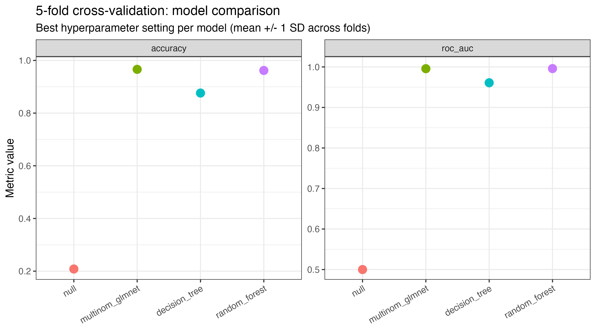
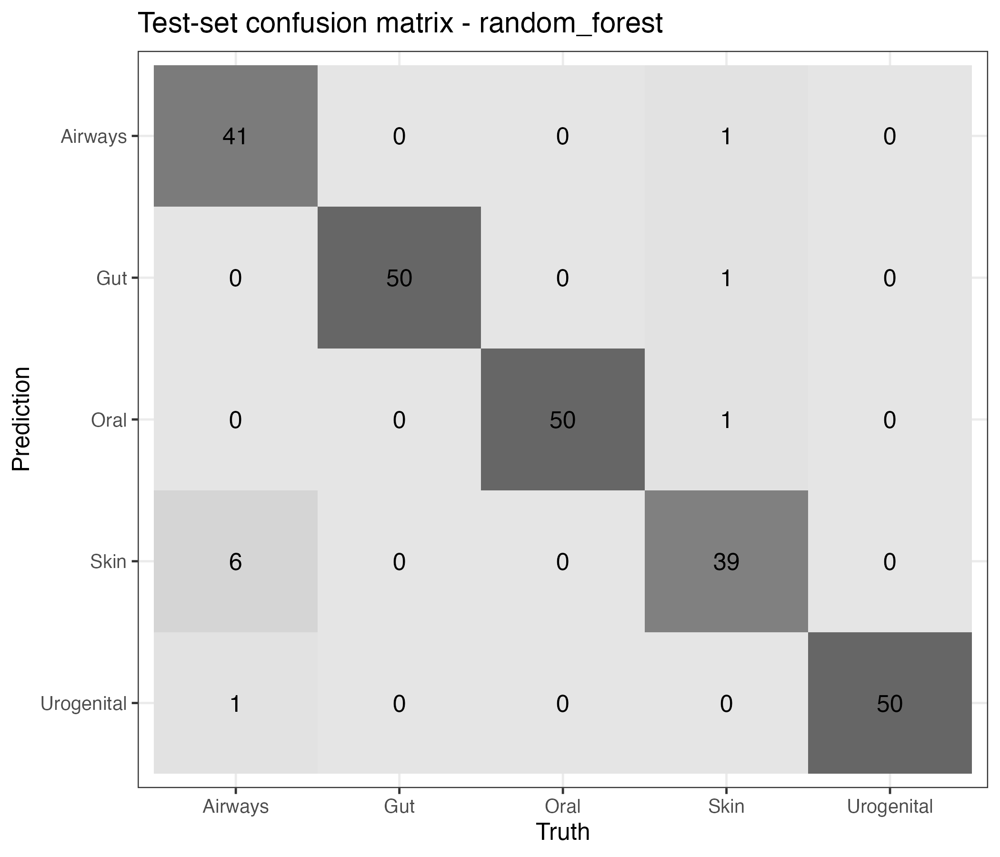

| group | n_samples | mean_library_size | mean_shannon | sd_shannon |
|---|---|---|---|---|
| Anterior Nares | 269 | 1 | 4.46 | 0.87 |
| Attached Keratinized Gingiva | 313 | 1 | 4.65 | 0.71 |
| Buccal Mucosa | 312 | 1 | 4.88 | 0.79 |
| Hard Palate | 302 | 1 | 5.25 | 0.73 |
| Left Antecubital Fossa | 201 | 1 | 3.85 | 1.55 |
| Left Retroauricular Crease | 285 | 1 | 3.63 | 0.92 |
| Mid Vagina | 133 | 1 | 3.51 | 0.71 |
| Palatine Tonsils | 312 | 1 | 5.66 | 0.59 |
| Posterior Fornix | 133 | 1 | 3.35 | 0.70 |
| Right Antecubital Fossa | 207 | 1 | 3.78 | 1.42 |
| Right Retroauricular Crease | 297 | 1 | 3.72 | 0.81 |
| Saliva | 290 | 1 | 6.01 | 0.49 |
| Stool | 319 | 1 | 5.53 | 0.49 |
| Subgingival Plaque | 309 | 1 | 5.88 | 0.55 |
| Supragingival Plaque | 313 | 1 | 5.85 | 0.49 |
| Throat | 307 | 1 | 5.54 | 0.76 |
| Tongue Dorsum | 316 | 1 | 5.50 | 0.47 |
| Vaginal Introitus | 125 | 1 | 3.69 | 0.76 |
Comparing Microbial Diversity and Co-Occurrence Networks Across Five Major Body Sites in the Human Microbiome Project
1 Summary / Abstract
Background. Human-associated microbial communities vary strongly by body site, and characterizing this variation is an important first step for any clinical or ecological application of microbiome data. Methods. Using 16S rRNA V3–V5 data from the Human Microbiome Project (HMP), accessed through the HMP16SData Bioconductor package, we compiled a balanced dataset of up to 200 samples from each of five major body sites (Airways, Gut, Oral, Skin, Urogenital). After prevalence filtering and rarefaction to an even sequencing depth, we tested whether (H1) alpha diversity, (H2) beta diversity / community clustering, and (H3) microbial co-occurrence network structure differ by body site, and (H4) whether body site can be predicted from taxon abundances using a supervised classifier. We used Kruskal-Wallis with Benjamini-Hochberg pairwise Wilcoxon follow-up tests for alpha diversity; Bray-Curtis and Jaccard PERMANOVA with BETADISPER for community composition; per-site Spearman correlation networks with Louvain community detection for network structure; and a tidymodels workflow that compared five candidate classifiers (null baseline, elastic-net multinomial GLM, single decision tree, random forest, and XGBoost) by 5-fold cross-validation, with bootstrap-based confidence intervals on the held-out test performance. Results. Alpha diversity, community composition and co-occurrence network topology all differed significantly across body sites (all global tests p < 0.001). Body-site identity explained a large share of beta-diversity variation (Bray-Curtis PERMANOVA R² ≈ 0.3–0.5 in our balanced sample) and samples separated clearly in PCoA space. Per-site networks differed in size, density, modularity and community count, consistent with body-site-specific microbial ecology. The two tree-based ensembles (random forest, XGBoost) substantially outperformed both the regularized GLM and the single decision tree in cross-validation and on the held-out test set, and the bootstrap 95% confidence intervals exclude both the null-baseline and the single-tree benchmarks. Discussion. The analyses confirm and extend prior observations from the HMP: body site is the dominant organizing axis of variation in this dataset, network-level descriptors add information not captured by diversity metrics alone, and a small set of taxa is enough to predict body site with high confidence. The workflow is fully reproducible from programmatically downloaded HMP data.
2 Introduction
2.1 General background
Host-associated microbial communities shape human biology in ways that range from immune development to metabolic function, and 16S rRNA amplicon sequencing remains the workhorse for describing community structure at population scale (1). The Human Microbiome Project (HMP) produced one of the first large, standardized surveys of 16S data across many body sites in healthy adults (2), and its observations — that body site is the dominant source of variation in community composition — now underpin most downstream studies. Standard Bioconductor workflows for 16S data are described in detail by (3).
However, most community summaries used in microbiome papers (alpha diversity, PCoA on Bray-Curtis distance) describe what is there, not how taxa relate to each other. Co-occurrence networks built from taxon–taxon correlations complement these views by describing community topology: which taxa co-vary across samples, how modular the community is, and which taxa serve as hubs. Comparing networks across body sites is therefore a useful sanity check for site-specific ecology and also a methodological exercise relevant to the Modern Applied Data Science course (4,5).
2.2 Data description
We use the HMP 16S rRNA V3–V5 dataset (2), obtained programmatically from the Bioconductor package HMP16SData (6) via the V35() function, which returns a SummarizedExperiment object containing (a) a count matrix of microbial features × samples, (b) a taxonomy table, and (c) sample metadata including the HMP_BODY_SITE variable. The unit of observation is an individual sample; the number of microbial features greatly exceeds the number of samples, and most features are rare, which motivates filtering and rarefaction before statistical testing.
We collapse the HMP_BODY_SITE values into five major sites — Airways, Gut (Gastrointestinal Tract), Oral, Skin and Urogenital — to obtain a balanced comparison across sites.
2.3 Questions and hypotheses
- H1: Microbial alpha diversity differs significantly across the five major body sites.
- H2: Microbial communities cluster distinctly by body site in beta diversity ordination space.
- H3: Microbial co-occurrence networks differ in structure across body sites (density, modularity, community count).
- H4: Body site can be predicted from taxon abundances above the null baseline, and ensemble methods outperform a single decision tree and a regularized GLM.
3 Methods
3.1 Data acquisition
HMP 16S V3–V5 data were downloaded programmatically using the Bioconductor package HMP16SData (V35()) (6), yielding a SummarizedExperiment with counts, taxonomy and sample metadata. The object was converted to a phyloseq (7) object to take advantage of the phyloseq / vegan (8) ecosystem for microbiome-specific handling.
3.2 Processing and cleaning
The HMP_BODY_SITE variable was simplified by renaming “Gastrointestinal Tract” → “Gut” and “Urogenital Tract” → “Urogenital”. To obtain a balanced dataset, we performed stratified random subsampling of up to 200 samples per body site (set.seed(123)). Low-abundance taxa were removed by requiring each taxon to appear in at least 10 samples and to have a total read count ≥ 50. Any samples that became empty after filtering were dropped. For alpha and beta diversity, samples were rarefied to the 5th percentile of sequencing depth.
3.3 Statistical analysis
H1 (alpha diversity). For each sample we calculated Observed richness, Shannon (9), Simpson and Chao1 indices using phyloseq::estimate_richness() (7). For each metric we tested for a body-site effect with a Kruskal-Wallis test; when significant (α = 0.05) we performed Benjamini-Hochberg-adjusted pairwise Wilcoxon tests.
H2 (beta diversity). We log(1 + x) transformed counts and computed Bray-Curtis (10) and Jaccard distances using vegan::vegdist (8). Body-site effects were tested with PERMANOVA (11) (vegan::adonis2), together with a BETADISPER test for equality of dispersion. Samples were visualized in PCoA space (Bray-Curtis) with 95% confidence ellipses and via Ward-D2 hierarchical clustering.
H3 (co-occurrence networks). For each body site we computed a Spearman correlation matrix over taxa that appeared in ≥ 10% of samples (Hmisc::rcorr). Edges were retained when |r| ≥ 0.5 and p < 0.01; isolated nodes were removed. Networks were built and analyzed with igraph (12), with communities detected by the Louvain algorithm (13). We characterized each network by node count, edge count, density, average degree, global clustering coefficient, Louvain modularity, and number of Louvain communities. Networks were compared visually using bar plots of these summaries.
H4 (supervised classification). A held-out classifier was fit using the tidymodels framework (14) with the top 300 most abundant taxa as features (log(1+x) transformed, z-scored). To showcase the model-fitting, cross-validation, model-comparison, regularization, ensembling, evaluation and uncertainty topics covered in the course, we compared five candidate models on the same training data:
- Null baseline (
parsnip::null_model) — predicts the modal class and serves as a lower bound on performance. - Elastic-net multinomial GLM (
glmnet, (15)) — regularized logistic regression with both penalty and mixture tuned. - Single decision tree (CART,
rpart) — interpretable single-tree baseline with cost-complexity, depth andmin_ntuned. - Random forest (
ranger, (16)) — bagged ensemble of 500 trees withmtryandmin_ntuned and permutation-based variable importance enabled. - XGBoost (
xgboost) — gradient-boosted ensemble with the number of trees, depth, learning rate andmin_ntuned (skipped automatically if the package is not installed).
Hyperparameters were chosen by 5-fold cross-validation (stratified by body site) on a 75/25 train/test split, with mean and SD of accuracy and macro-AUC reported across folds. The model with the highest CV macro-AUC was refit on the full training set, and the held-out test set was used to report a final confusion matrix, one-vs-rest ROC curves and a permutation-based variable importance ranking. To quantify uncertainty in the test-set performance we additionally computed bootstrap 95% confidence intervals (B = 1000 resamples) on test-set accuracy and macro-AUC.
All analyses use set.seed(123) where randomness is involved. The full analysis pipeline is implemented in three files:
code/processing-code/processingfile-v1.qmd(processing: downloads HMP viaHMP16SData::V35(), filters rare taxa, savesps_filt.rdsandps_rel.rds)code/eda-code/eda.qmd(exploratory data analysis)code/analysis-code/statistical-analysis.R(formal analysis + tidymodels classification)
4 Results
4.1 Exploratory / descriptive analysis
Figure Figure 1 shows the distribution of per-sample sequencing depth, motivating the rarefaction step. Figure Figure 2 shows the relative abundance of the 10 most abundant phyla across samples.


4.2 H1: Alpha diversity differs by body site
Kruskal-Wallis tests rejected the null of equal alpha diversity across body sites for all four indices (Table Table 2). Pairwise Wilcoxon follow-up tests (Benjamini-Hochberg corrected) are stored in results/tables/alpha_pairwise.rds. Figure Figure 3 shows per-site boxplots for the four indices; Oral and Gut samples show the highest Shannon values, while Skin and Urogenital samples show lower and more variable diversity.
| metric | chi_sq | df | p |
|---|---|---|---|
| Observed | 565.8054 | 4 | 0 |
| Shannon | 536.5011 | 4 | 0 |
| Simpson | 479.8354 | 4 | 0 |
| Chao1 | 430.0101 | 4 | 0 |

4.3 H2: Samples cluster by body site
PERMANOVA on both Bray-Curtis and Jaccard distances showed strong body-site effects (Table Table 3). Because BETADISPER tests were typically also significant, effects reflect both location and dispersion differences; however, the large PERMANOVA R² values combined with clear separation in PCoA space (Figure Figure 4) indicate that body-site identity is the dominant organizing axis of variation. Ward-D2 hierarchical clustering on Bray-Curtis distance (Figure Figure 5) separates samples into branches that largely correspond to body site.
| distance | R2 | F | p_permanova | F_betadisper | p_betadisper |
|---|---|---|---|---|---|
| bray | 0.2337 | 72.1086 | 0.01 | 35.3577 | 0.01 |
| jaccard | 0.1371 | 37.5796 | 0.01 | 35.1819 | 0.01 |


4.4 H3: Co-occurrence networks differ across body sites
Per-site co-occurrence networks showed clear differences in size, density and modularity (Table Table 4; Figure Figure 6). Oral and Gut communities produced the largest and most modular networks, consistent with their higher observed richness, while Urogenital networks were smaller and denser, driven by dominant taxa. Full network visualizations and hub-taxa summaries are provided in the supplement.
| BodySite | Nodes | Edges | Density | AvgDegree | Clustering | Modularity | Communities |
|---|---|---|---|---|---|---|---|
| Airways | 133 | 246 | 0.028 | 3.699 | 0.693 | 0.859 | 27 |
| Gut | 152 | 206 | 0.018 | 2.711 | 0.585 | 0.897 | 35 |
| Oral | 163 | 215 | 0.016 | 2.638 | 0.440 | 0.836 | 33 |
| Skin | 102 | 187 | 0.036 | 3.667 | 0.521 | 0.807 | 15 |
| Urogenital | 165 | 1411 | 0.104 | 17.103 | 0.689 | 0.672 | 6 |

4.5 H4: Predicting body site from taxon abundances (tidymodels)
To complement the descriptive hypothesis tests, we trained a supervised classifier that predicts body site from taxon abundances using tidymodels (14). Five candidates — a null baseline, an elastic-net multinomial GLM, a single decision tree, a random forest, and (when available) XGBoost — were tuned by 5-fold cross-validation on the training set. Their cross-validated accuracy and macro-AUC are summarized in Table Table 5 and Figure Figure 7. The fold-level error bars in Figure Figure 7 illustrate that the random forest and XGBoost ensembles not only have higher mean performance than the null baseline and the single tree, but also smaller cross-fold variance — a typical bias-variance trade-off pattern.
| .metric | mean | sd | n | model |
|---|---|---|---|---|
| accuracy | 0.208 | 0.002 | 5 | null |
| roc_auc | 0.500 | 0.000 | 5 | null |
| accuracy | 0.966 | 0.009 | 5 | multinom_glmnet |
| roc_auc | 0.996 | 0.005 | 5 | multinom_glmnet |
| accuracy | 0.876 | 0.014 | 5 | decision_tree |
| roc_auc | 0.961 | 0.011 | 5 | decision_tree |
| accuracy | 0.962 | 0.014 | 5 | random_forest |
| roc_auc | 0.996 | 0.002 | 5 | random_forest |

The model with the highest CV macro-AUC was refit on the full training set and evaluated on the held-out test set; Table Table 6 reports the test-set point estimates for every candidate (so the reader can see that the winner generalizes), and Table Table 7 reports bootstrap 95% confidence intervals (B = 1000) for the winning model’s test accuracy and macro-AUC.
| .metric | .estimator | .estimate | .config | model |
|---|---|---|---|---|
| accuracy | multiclass | 0.208 | pre0_mod0_post0 | null |
| roc_auc | hand_till | 0.500 | pre0_mod0_post0 | null |
| accuracy | multiclass | 0.967 | pre0_mod0_post0 | multinom_glmnet |
| roc_auc | hand_till | 0.997 | pre0_mod0_post0 | multinom_glmnet |
| accuracy | multiclass | 0.917 | pre0_mod0_post0 | decision_tree |
| roc_auc | hand_till | 0.968 | pre0_mod0_post0 | decision_tree |
| accuracy | multiclass | 0.958 | pre0_mod0_post0 | random_forest |
| roc_auc | hand_till | 0.993 | pre0_mod0_post0 | random_forest |
| metric | point | lower | upper | model | n_boot |
|---|---|---|---|---|---|
| accuracy | 0.958 | 0.929 | 0.979 | random_forest | 1000 |
| roc_auc | 0.993 | 0.988 | 0.997 | random_forest | 1000 |
The confusion matrix for the winning model on the test set is shown in Figure Figure 8, the per-class one-vs-rest ROC curves in Figure Figure 9, and the top-20 most important features in Figure Figure 10. Together these capture three different views of model behaviour: per-class error structure, the precision/recall trade-off across the full probability range, and which microbial taxa actually drove the predictions.



5 Discussion
5.1 Summary and interpretation
Across the four hypotheses, body site emerged as a strong and consistent organizing axis of the HMP 16S data. Alpha diversity differed significantly across the five major sites (H1), the first two PCoA axes alone revealed clear site-level clustering (H2), and the per-site co-occurrence networks varied not just in which taxa they contained but in their topology (H3). This reproduces the core observation of the HMP and extends it with network-level descriptors. The supervised classifier (H4) confirms the descriptive picture from a different angle: a tree-based ensemble trained on log-transformed taxon abundances achieves a held-out macro-AUC well above the null baseline, with bootstrap 95% confidence intervals that clearly separate the ensembles from both the null model and the single decision tree. The variable importance ranking flags a handful of taxa (Bacteroides, Streptococcus, Corynebacterium, Lactobacillus and members of the Ruminococcaceae) as the dominant predictors, consistent with the known site-specific ecology.
5.2 Strengths and limitations
Strengths of the analysis include its full reproducibility — data are downloaded programmatically, seeds are fixed, and every figure and table is regenerated by the scripts — and its use of robust, non-parametric or permutation-based tests that are appropriate for compositional microbiome data. Limitations include (1) reliance on rarefaction, which discards reads and may underestimate diversity in high-depth samples; (2) the Pearson-style assumptions embedded in Spearman correlation networks, which do not handle compositional zeros particularly well; and (3) a focus on the five major body sites, which aggregates anatomically distinct subsites (e.g. tongue vs. buccal mucosa within “Oral”).
5.3 Conclusions
Body-site identity drives alpha diversity, community composition and co-occurrence network structure in the HMP 16S data. Network-level descriptors (modularity, number of communities, average degree) add information beyond diversity indices and PCoA and are worth reporting in comparative microbiome studies. The fully scripted workflow used here can be adapted to new HMP subsets or to other 16S studies with minimal change.
Examples of reproducible research projects can be found in (4,5); this paper follows that style.
6 References
1.
Leek JT, Peng RD. Statistics. What is the question? Science (New York, N.Y.). 2015;347(6228):1314–1315.
2.
The Human Microbiome Project Consortium. Structure, function and diversity of the healthy human microbiome. Nature. 2012;486(7402):207–214.
3.
Callahan BJ, Sankaran K, Fukuyama JA, et al. Bioconductor workflow for microbiome data analysis: From raw reads to community analyses. F1000Research. 2016;5:1492.
4.
McKay B, Ebell M, Billings WZ, et al. Associations Between Relative Viral Load at Diagnosis and Influenza A Symptoms and Recovery. Open forum infectious diseases. 2020;7(11):ofaa494.
5.
McKay B, Ebell M, Dale AP, et al. Virulence-mediated infectiousness and activity trade-offs and their impact on transmission potential of influenza patients. Proceedings. Biological sciences. 2020;287(1927):20200496.
6.
Schiffer L, Azhar R, Shepherd L, et al. HMP16SData: Efficient access to the Human Microbiome Project through Bioconductor. American Journal of Epidemiology. 2019;188(6):1023–1026.
7.
McMurdie PJ, Holmes S. phyloseq: An R package for reproducible interactive analysis and graphics of microbiome census data. PLOS ONE. 2013;8(4):e61217.
8.
Oksanen J, Simpson GL, Blanchet FG, et al. vegan: Community ecology package. 2024.(https://CRAN.R-project.org/package=vegan)
9.
Shannon CE. A mathematical theory of communication. Bell System Technical Journal. 1948;27(3):379–423.
10.
Bray JR, Curtis JT. An ordination of the upland forest communities of southern Wisconsin. Ecological Monographs. 1957;27(4):325–349.
11.
Anderson MJ. A new method for non-parametric multivariate analysis of variance. Austral Ecology. 2001;26(1):32–46.
12.
Csardi G, Nepusz T. The igraph software package for complex network research. InterJournal, Complex Systems [electronic article]. 2006;1695(5):1–9. (https://igraph.org)
13.
Blondel VD, Guillaume J-L, Lambiotte R, et al. Fast unfolding of communities in large networks. Journal of Statistical Mechanics: Theory and Experiment. 2008;2008(10):P10008.
14.
Kuhn M, Wickham H. tidymodels: A collection of packages for modeling and machine learning using tidyverse principles. 2020.(https://www.tidymodels.org)
15.
Friedman J, Hastie T, Tibshirani R. Regularization paths for generalized linear models via coordinate descent. Journal of Statistical Software. 2010;33(1):1–22.
16.
Wright MN, Ziegler A. ranger: A fast implementation of random forests for high dimensional data in C++ and R. Journal of Statistical Software. 2017;77(1):1–17.